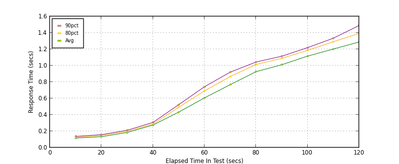
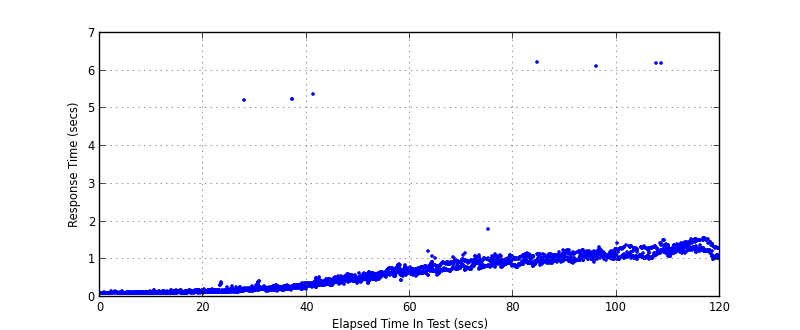
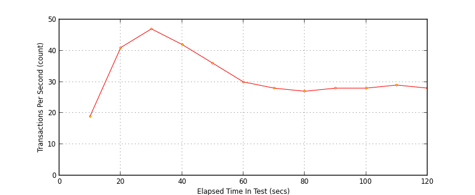

Performance Results Report
Summary
transactions: 3912
errors: 0
run time: 120 secs
rampup: 120 secs
test start: 2013-05-13 23:59:38
test finish: 2013-05-14 00:01:38
time-series interval: 10 secs
workload configuration:
| group name | threads | script name |
|---|
| user_group-1 | 40 | debit.py |
All Transactions
Transaction Response Summary (secs)
| count | min | avg | 80pct | 90pct | 95pct | max | stdev |
|---|
| 3912 | 0.099 | 0.625 | 1.067 | 1.198 | 1.297 | 6.220 | 0.482 |
Interval Details (secs)
| interval | count | rate | min | avg | 80pct | 90pct | 95pct | max | stdev |
|---|
| 1 | 190 | 19.00 | 0.099 | 0.117 | 0.125 | 0.136 | 0.142 | 0.164 | 0.012 |
| 2 | 414 | 41.40 | 0.105 | 0.133 | 0.147 | 0.158 | 0.171 | 0.216 | 0.018 |
| 3 | 473 | 47.30 | 0.123 | 0.185 | 0.198 | 0.211 | 0.227 | 5.214 | 0.235 |
| 4 | 422 | 42.20 | 0.154 | 0.275 | 0.287 | 0.307 | 0.330 | 5.247 | 0.346 |
| 5 | 363 | 36.30 | 0.256 | 0.433 | 0.491 | 0.524 | 0.558 | 5.383 | 0.272 |
| 6 | 308 | 30.80 | 0.382 | 0.606 | 0.692 | 0.742 | 0.767 | 0.878 | 0.098 |
| 7 | 283 | 28.30 | 0.568 | 0.768 | 0.867 | 0.920 | 0.941 | 1.222 | 0.105 |
| 8 | 270 | 27.00 | 0.716 | 0.926 | 1.014 | 1.044 | 1.076 | 1.815 | 0.110 |
| 9 | 285 | 28.50 | 0.790 | 1.011 | 1.088 | 1.114 | 1.135 | 6.220 | 0.324 |
| 10 | 281 | 28.10 | 0.914 | 1.116 | 1.186 | 1.219 | 1.239 | 6.135 | 0.313 |
| 11 | 297 | 29.70 | 1.005 | 1.202 | 1.291 | 1.334 | 1.372 | 6.216 | 0.429 |
| 12 | 286 | 28.60 | 1.015 | 1.288 | 1.393 | 1.489 | 1.523 | 1.571 | 0.132 |
Graphs
Response Time: 10 sec time-series

Response Time: raw data (all points)

Throughput: 5 sec time-series
